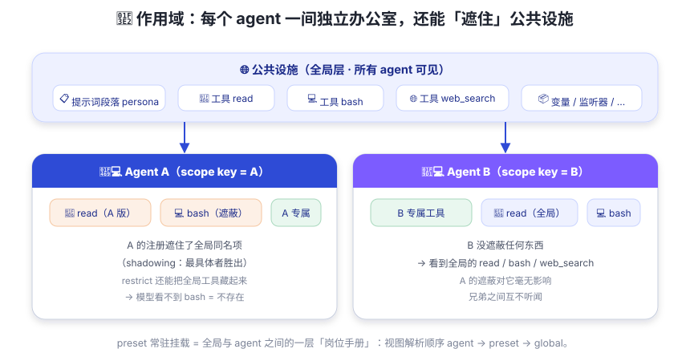

作用域：agent 的独立办公室
几个 agent 共用一间大办公室？不 —— 每人一间独立办公室，还能在自己的房间里「遮住」公共设施。
一家公司有一层公共设施：茶水间、打印机、会议室（全局注册：工具、提示词、监听器）。但如果所有员工共用一个工位，A 调亮了自己的显示器、贴满了自己的便签，B 一屁股坐下来全乱了——这工位还能不能好好上班了？
dsh 的做法：每个 agent 有自己的独立办公室（scope）。公共设施人人都能用；但你在自己办公室里的布置（带作用域的注册）只有你自己看得到，还能用一块帘子把某些公共设施「遮住」（shadowing / restriction）。你在自己屋里偷偷藏了台打印机，隔壁同事该用公共打印机还用——谁也不耽误谁。

关键概念三件套
① scope key —— 办公室的门牌号
scope key 是一个不透明的对象身份（按对象同一性比较）。dsh 的约定很干脆： 一个活跃的 agent 就是它自己 scope 的 key。
② agent.ctx —— 你的私人办公室
每个 agent 有一个带作用域的上下文 agent.ctx。通过它做的注册
同时获得两个特性：作用域可见（只有这个 agent 能看到）和
作用域生命周期（agent 销毁时随之撤销）。
想在某个 agent 里注册一个它专属的工具、一段它专属的提示词？都走这里。
③ shadowing —— 最具体者胜出
注册视图沿「父链」向下继承：agent → preset → 全局，离 agent 越近的越优先。 同名时内层遮住外层 —— 这给了两个强大的能力：
- 按 agent 定制 persona：为某个 agent 提供同名的提示词片段，盖住全局默认；
- 按 agent 定制工具变体：给它一个同名工具，其它 agent 不受影响。
restriction：把工具藏起来
ctx.tools.restrict(filter) 可以为单个 scope 过滤全局工具集合
（多个 restriction 取交集 —— 越藏越少）。被过滤掉的工具：
既不出现在提示词里，也拒绝执行 —— 对模型来说它「等于不存在」。
注意官方提醒：这是可见性组合，不是安全边界。
preset：全局与 agent 之间的「岗位手册」
一个 preset 就是一份 agent.cordis.yml（一套插件组合）。
它被每进程只挂载一次为常驻挂载（standing mount），
每个选择该 preset 的会话把自己的 scope 挂到它下面：
视图解析顺序：agent → preset → global
- agent 专属注册：只属于这个 agent
- preset 挂载：所有选了这个 preset 的会话共用（工具/提示词恰好一份）
- 全局层：人人可见
两个兄弟 preset 互不听闻（挂在不同常驻挂载下）；preset 内的服务可以放进
isolate realm —— 相当于把同名服务关进各自的隔离域，互不冲突。
同一个 preset 的所有会话彼此隔离，因为插件按 Session 键控状态。
注意：带作用域的注册不会向下继承给子代理（scope 只有两层，扁平结构）。 子代理想要父级的能力，走的是「加入父级的 preset 组合」这条数据通道（lineage）， 而不是继承 scope 结构。